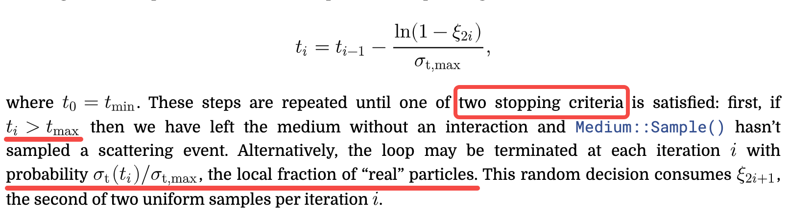
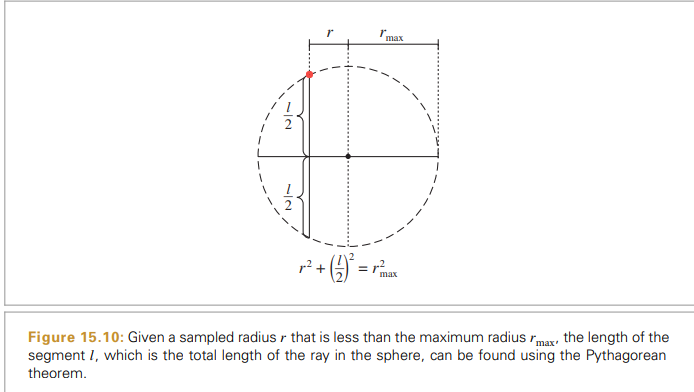

PBR Chapter15 Light Transport II: Volume Rendering
- The Equation of Transfer(LTE)
- Generalized Path Space
- Sampling Volume Scattering
- Volumetric Light Transport
- Sampling Subsurface Reflection Functions
- Subsurface Scattering Using the Diffusion Profile
The Equation of Transfer(LTE)
- Two effects that contribute to radiance along the ray
- The emitted and reflected radiance from the surface. This radiance may be attenuated by the participating media; the beam transmittance from the ray origin to the point accounts for this.
- the added radiance along the ray due to volume scattering and emission but only up to the point where the ray intersects the surface
{kind=link}
Generalized Path Space
- path integration
- An integral that can consider an arbitrary sequence of both 2D surface locations A and 3D positions in a participating medium V .
- a sum of many integrals considering all possible sequences of surface and volume scattering events
{kind=link}
{kind=link}
{kind=link}
{kind=link}
{kind=link}
Sampling Volume Scattering
- Without loss of generality, the following discussion assumes that there is always a surface at some distance.
two cases when path tracing
-
- regular tracking becomes costly when there are many voxels
- ray marching introduces systemic statistical bias which generally won’t converge to the right result
- delta tracking （unbiased)
- filling the medium with additional (virtual) particles until its attenuation coefficient is constant everywhere
- however whenever an interaction with a particle occurs, it is still necessary to determine if it involved a “real” or a “virtual” particle
- the scattering and absorption coefficients are still permitted to vary with respect to wavelength — however, their sum must be uniform
- steps
- precompute the inverse of the maximum density scale factor over the entire medium delta tracking 会把media的 density “填充” 成 maximum density
- transforming the ray into the medium coordinate system and normalizing the ray direction
- computes the parametric range of the ray’s overlap with the medium’s bounds
- each delta-tracking iteration performs a standard exponential step through the uniform medium 实际是根据当前位置的density / maximum density 来判断是否是real particles 
Sampling Phase Function
{kind=link}
{kind=link}
{kind=link}
{kind=link}
{kind=link}
{kind=link}
{kind=link}
{kind=link}
{kind=link}
{kind=link}
{kind=link}
Volumetric Light Transport
- VolPathIntegrator’s main responsibility is to implement the Li() method.
- Usually, the ray is first intersected with the surfaces in the scene to find the closest surface intersection, if any. Next, participating media are accounted.
- In scenes with very dense scattering media, a more efficient implementation would be to first sample a medium interaction.
{kind=link}
Sampling Subsurface Reflection Functions
{kind=link}
{kind=link}
- sample points p_i on the surface and to compute the incident radiance at these points
- an efficient way to compute the specific value of the BSSRDF S for each sampled point p_i and incident direction
- VolPathIntegrator path tracer integration to evaluate the BSSRDF
- BSSRDF sampling
- sampling the SeparableBSSRDF
- assume that the BSSRDF is only sampled for rays that are transmitted through the surface boundary, so 1 - F_r(cos theta_o) has nothing needs to sample
- S_w(w_i)
- defined as a diffuse-like term scaled by the normalized Fresnel transmission
- just uses the default cosine-weighted sampling routine to calculate pdf
- S_p sampling an out position
- need a way of mapping a 2D distribution function onto an arbitrary surface using a parameterization of the surface in the neighborhood of the outgoing position
- a simpler approach
- difficulties
- first two problems can be addressed with introducing additional tailored sampling distributions and combining them using multiple importance sampling
- per wavelength
- additionally replicated three times with different projection axes given by the basis vectors of a local frame
- stages
- choosing a projection axis
calc all based on local coordinated of p_o
allocate a fairly large portion (50%) of the sample budget to perpendicular rays. The other
half is equally shared between tangential projections
- uniformly choose a spectral channel and re-scale u1 once more
- sampling S_r
- in order to reduce the computational expense of the ray-tracing step, the probe ray is clamped to a sphere of radius r_max around p_o
- calc probe trace start 
- calc intersection chain and choose one from it uniformly
- calc the pdf and the S_p

- choosing a projection axis
calc all based on local coordinated of p_o
allocate a fairly large portion (50%) of the sample budget to perpendicular rays. The other
half is equally shared between tangential projections
- difficulties
- sampling the TabulatedBSSRDF
- Subsurface Scattering in Path Tracer
{kind=link}
{kind=link}
{kind=link}
{kind=link}
{kind=link}
{kind=link}
{kind=link}
{kind=link}
Subsurface Scattering Using the Diffusion Profile
- initialize the TabulatedBSSRDF with a radial profile function S_r that accurately describes subsurface scattering for given properties of the scattering medium (theta_a, theta_s, the phase function asymmetry parameter g, and the relative index of refraction).
- photon beam diffusion (PBD)
- assumption
- the distribution of light in the translucent medium is modeled with the diffusion approximation
- homogeneous scattering properties throughout the "semi-infinite" medium
- builds upon the separable BSSRDF approximation of Equation
- precompute S_r for a range of radii and albedo values and use the results to populate the BSSRDFTable of a TabulatedBSSRDF
- assumption
- principle of similarity
- for an anisotropically scattering medium with a high albedo, the medium can instead be modeled as having an isotropic phase function with appropriately modified scattering and attenuation coefficients
- isotropization due to multiple scattering events from the Henyey–Greenstein phase function. As n grows large, this converges to the isotropic phase function 1/ (4 * pi).
- reduced scattering coefficient
- reduced albedo 因为假设了isotropic phase function，所以需要改变scattering coefficients来弥补假设带来的artifacts， theta_s probability of scattering
- diffusion theory
{kind=link}
{kind=link}
{kind=link}
{kind=link}
{kind=link}